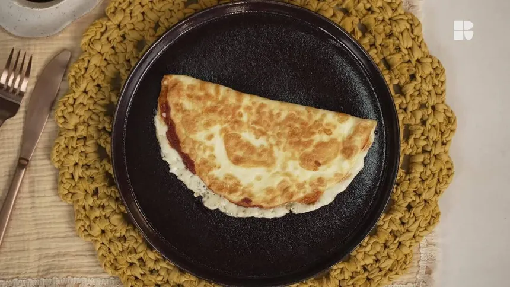

Início
Crepioca
Feito Por: Felipe Miotto

Descrição:
Receita preparada facilmente com: Ovos, Farinha de Tapioca, Sal, Presunto e Queijo
Ingredientes:
- 3 ovos
- Farinha de Tapioca
- 2 fatias de Presunto
- 2 fatias de Queijo
- Sal
- Manteiga (opcional)
Modo de Preparo:
- Peque uma tigela e insira nela 2 claras, e 1 ovo inteiro, e as gemas restantes devem ser descartadas, ou reutilizadas caso desejar futuramente;
- Após isso, na mesma tigela, coloque 3 colheres de Farinha de Tapioca, uma pitada de sal, e mexa ate ficar homogênea;
- Quando a mistura estiver concluída, pegue uma frigideira, e caso ela for antiaderente, apenas espere ela esquentar e ponha a mistura, porém, se ela não for, coloque apenas uma "lasquinha" de manteiga para nao grudar crepioca em sua superficie;
- Quando a Crepioca não apresentar consistência aquosa na frigideira, vire-a e insira na mesma frigideira para deixar ambos os lados prontos;
- Enquanto a mistura estiver esquentando, insira duas fatias de queijo e 2 de presunto, entretanto, apenas ate sua metade para facilitar o próximo passo;
- Quando a Crepioca estiver com a textura e consistência ideal, dobre-a no sentido dos itens do passo anterior, e após dobrar, coloque-a em um prato;
- Finalmente, aproveite a sua Crepioca!